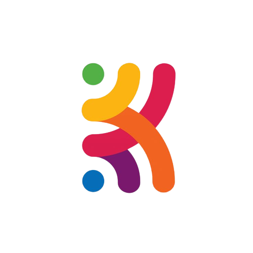

The Creative Arts Global Festival 2023 is an event that brings together artists, performers, and art enthusiasts from all over the world.
The festival is a celebration of the arts in all its forms, from painting and sculpture to music, dance, and theater.
It is a platform for artists to showcase their work, connect with other artists, and engage with audiences from different cultures and backgrounds.
The festival features a wide range of events and activities, including exhibitions, performances, workshops, and talks.
Visitors can explore the works of emerging and established artists, attend concerts and dance performances, participate in interactive installations, and learn new skills in workshops and masterclasses.
One of the highlights of the festival is the Art Market, where visitors can purchase artworks directly from the artists. The market features a diverse range of artworks, from traditional to contemporary, and offers a unique opportunity to discover new talent and acquire original pieces.
The Creative Arts Global Festival 2023 is not just a celebration of art, but also a platform for dialogue and exchange. It is a space where artists and audiences can come together to explore the power and beauty of creativity, and to build bridges across cultures and communities.
Please contact us if you have any questions or comments about art festival 2023.
The Creative Arts Global Festival 2023 event logo is a visual representation of the festival's mission to celebrate the diversity and creativity of art from around the world. The logo features a colorful globe with brush strokes and musical notes, symbolizing the different forms of art that the festival showcases.

See the past Art Festivals
Take a look at the past Art Festivals and see what you can expect from the next one.